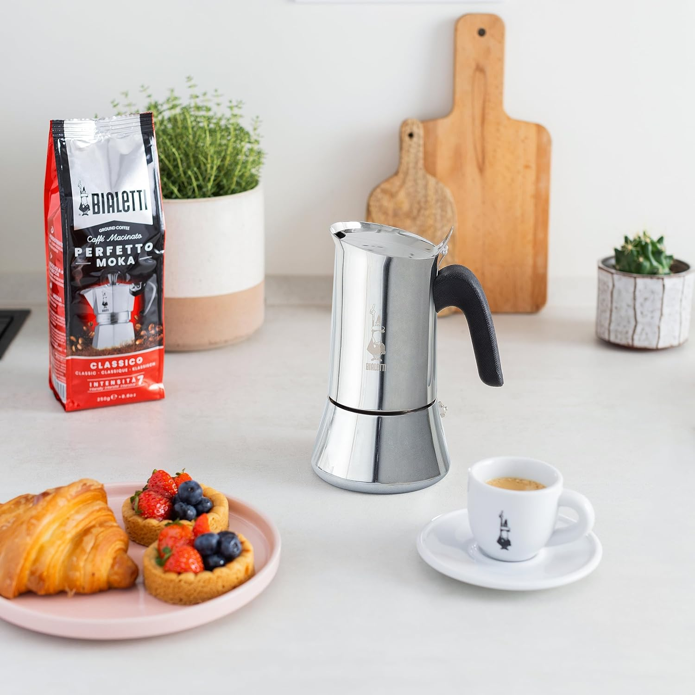

Vind snel je perfecte percolator
Geen tijd om alles te lezen? Dit zijn onze top 3 aanbevelingen:
Beste algemeen

Bialetti Fiammetta
Perfecte balans prijs/kwaliteit
€35
•
3 cups
•
Aluminium
Bekijk review →
Onze experts hebben meer dan 50 percolators getest om jou de ultieme top 10 te brengen. Van klassieke Bialetti tot moderne Alessi designs.
Geen tijd om alles te lezen? Dit zijn onze top 3 aanbevelingen:
Perfecte balans prijs/kwaliteit
Vergelijk alle eigenschappen in één overzicht. Klik op een modelnaam voor de volledige review.
| Ranking | Model | Materiaal | Inductie | Capaciteit | Prijsklasse | Beste voor | Rating | Acties |
|---|---|---|---|---|---|---|---|---|
| 1 | Bialetti Fiammetta 3c | Aluminium | 3 cups (150ml) | € | Beginners | Review | ||
| 2 | Bialetti Venus 4c | RVS | 4 cups (200ml) | €€ | Inductie | Review | ||
| 3 | Bialetti Moka Express 3c | Aluminium | 3 cups (150ml) | € | Klassiek | Review | ||
| 4 | Bialetti Musa 6c | RVS | 6 cups (300ml) | €€ | Gezinnen | Review | ||
| 5 | Bialetti Dama 3c | RVS | 3 cups (150ml) | €€ | Design | Review | ||
| 6 | Bialetti Alpina 2c | Aluminium | 2 cups (100ml) | € | Compact | Review | ||
| 7 | Alessi Pulcina 3c | Aluminium | 3 cups (150ml) | €€€ | Design | Review | ||
| 8 | Bialetti Mini Express 2c | Aluminium | 2 cups (100ml) | € | Solo gebruik | Review | ||
| 9 | Grosche Milano 6c | RVS | 6 cups (300ml) | €€ | Moderne stijl | Review | ||
| 10 | Bialetti Brikka 4c | Aluminium | 4 cups (200ml) | €€ | Crema laag | Review |

Legenda: € = €15-30 | €€ = €30-60 | €€€ = €60+ | c = cups (kopjes)
Elk model doorloopt minimaal 3 maanden intensief dagelijks gebruik in onze keuken. We testen 50+ zettingen per percolator en beoordelen op 6 criteria: koffiesmaak (30%), bouwkwaliteit (20%), gebruiksgemak (15%), onderhoud (15%), duurzaamheid (10%), prijs-kwaliteit (10%).
Alle percolators zijn door ons zelf gekocht. We ontvangen geen betaling van merken. Lees onze volledige testmethode →
Perfecte balans prijs-kwaliteit. Ideaal voor dagelijks gebruik op gas, elektrisch of keramisch. Na 6 maanden dagelijks gebruik blijft de Fiammetta onze favoriet: consistente koffie, tijdloos design en premium bouwkwaliteit.

Beste keuze voor inductie. RVS‑behuizing is robuust, makkelijk schoon te maken en oogt strak op het fornuis. De koffiesmaak is ronder en zachter dan bij aluminium, met weinig kans op bijsmaken.
Iconisch origineel sinds 1933. Krachtige en consistente koffiesmaak, licht maar stevig, reserveonderdelen overal verkrijgbaar. De beste budgetkeuze voor authentieke Italiaanse ervaring.

Beste keuze voor grotere huishoudens. 6-kops RVS met inductie, solide en premium aanvoelend. Koffie blijft vol en evenwichtig, zelfs bij grotere volumes.

Compacte, stijlvolle RVS‑percolator met vloeiende lijnen en verfijnde afwerking. Luxere interpretatie van traditionele Bialetti met premium uitstraling.

Compacte, karaktervolle percolator geïnspireerd op de Alpentroepen. Verrassend krachtige koffie voor 1–2 kopjes, uniek design dat opvalt.

Iconisch design door Michele De Lucchi. Kunstobject-achtige kwaliteit, zwaar en prachtig afgewerkt. Uitstekende koffie met premium beleving.

Speelse manier om direct in twee kopjes te serveren. Koffie stroomt rechtstreeks in de kopjes bovenop de basis, creëert een klein barista‑moment.

Sterk alternatief buiten Bialetti. Solide en goed afgewerkt met prestaties dicht bij vergelijkbare RVS‑modellen. Interessant geprijsd.

Speciaal drukventiel voor espresso‑achtige mokkakoffie met crema. Intensere, vollere koffie door hogere druk. Ideaal voor wie tussen moka en espresso in wil zitten.
De eerste keuze: op welke kookplaat zet je koffie? Inductie vereist RVS met magnetische bodem (Venus, Musa, Grosche). Gas/elektrisch/keramisch: aluminium werkt prima. Doe de magneettest: blijft een magneet aan de bodem plakken? Dan werkt hij op inductie.
Solo (1–2 kopjes): Mini Express of Alpina. Koppel (dagelijks): Fiammetta of Moka Express (3 kops) – meest veelzijdig. Gezin (3–4 personen): Musa of Grosche Milano (6 kops). Een percolator werkt het beste vol gevuld.
€20–30: Moka Express (het origineel). €30–50: Fiammetta (beste allround) of Venus (inductie + RVS). €50–90: Musa (gezin + inductie) of Dama (design). €90+: Alessi Pulcina (design). De sweet spot: €30–50.
Aluminium: lichter, goedkoper, klassieke look – niet voor inductie. RVS: werkt op alle kookplaten, duurzamer, moderne uitstraling. Smaakverschil is klein; de keuze draait surtout om kookplaat en esthetiek.
Niet zeker? French press (eenvoudiger), AeroPress (reizen), espressomachine (cappuccino, 10× duurder), Nespresso (gemak, duurder per kop), filter/pour-over (lichter, minder body). Voor 90% blijft de percolator de beste balans.
Bol.com (breed assortiment, goede retour), Amazon.nl (scherpe prijzen, check verkoper), gespecialiseerde koffiewinkels (advies). Prijzen kunnen €5–15 verschillen. Tweedehands aluminium kan, maar vervang de pakking.
Meeste mensen: Fiammetta (beste balans). Inductie: Venus. Budget: Moka Express. Design: Alessi Pulcina. Gezinnen: Musa 6-kops. Nog twijfel? Begin met Fiammetta of Moka Express.
Nog steeds niet zeker? Bekijk onze volledige reviews of koopgidsen.